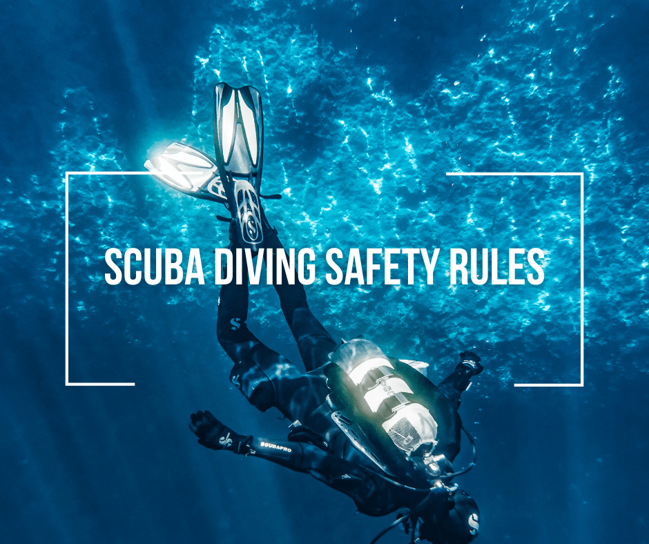

STOP!! Safety First!
As with all sports, safety is very important, especially when it is underwater
- Never hold your breath while ascending! Ascending should be slow and your breathing should be normal.
- Your lungs expand during ascent and contracts during descent. When you hold you breath, air can no longer escape as your lungs expand and can eventually lead to the alveoli that make up the lung walls to rupture.
- Always obey all diving instruction. When you descend, make sure to equalize your ears and mask.
- Do NOT drink alcohol and/or take drugs before diving
- ALWAYS CHECK YOUR EQUIPMENT AND MAKE SURE IT WORKS
- Your survival underwater depends on your equipment so do not be lazy when it comes to checking your gear before a dive.
- Never dive without a buddy
- Having a buddy with you in case something goes wrong is always in your best interests rather than going off on your own.
- Always plan your dive, and always dive your plan
